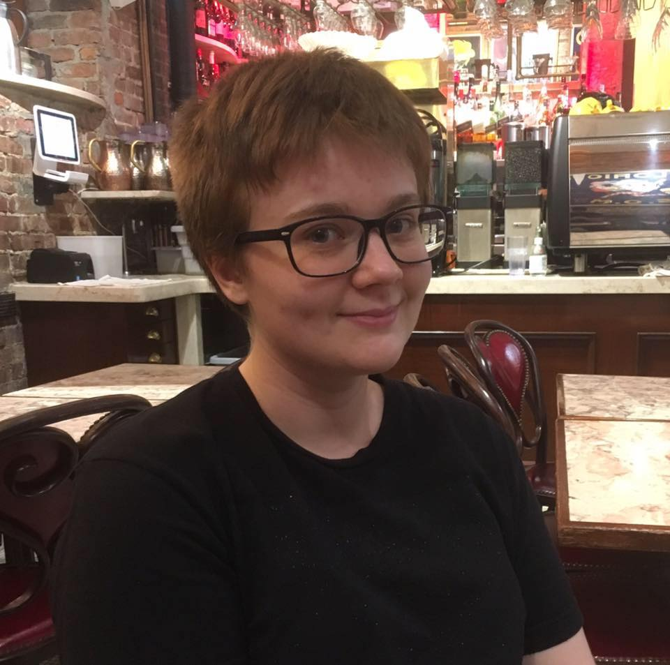

I’m Charlie and I’m a writer and software engineer.
I'm currently working as a part engineer, part scientist doing UI/UX research and development at Charles River Analytics in the Human Effectiveness division.
I graduated from MIT with a double major in Computer Science and Engineering and Comparative Media Studies in June 2017. I am currently the Publisher of the MIT’s student newspaper, The Tech (previously a reporter and editor). I do my best to adhere to AP style guidelines (and to use the Oxford comma) and to thoroughly comment my code.
I have experience in full stack development and UI/UX design. I'm particularly excited about working on interdisciplinary projects related to the intersection of technology, society, and culture, especially projects related to journalism, music, and storytelling. I work well in teams containing a mix of technical and non-technical folks.
From fall 2017 to spring 2018, I served as a teaching assistant for MIT's Fundamentals of Programming (6.009), where I helped teach intermediate-level software engineering concepts using Python to over 400 students. Before that, I spent a summer as a research assistant on the Youth and Media and Artificial Intelligence teams at the Berkman Klein Center for Internet & Society at Harvard University.
I'm currently really interested in data visualization, storytelling, and VR/AR UX.